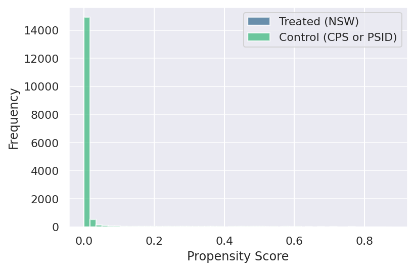
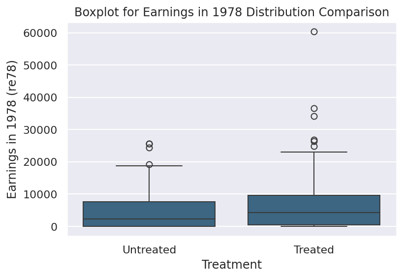
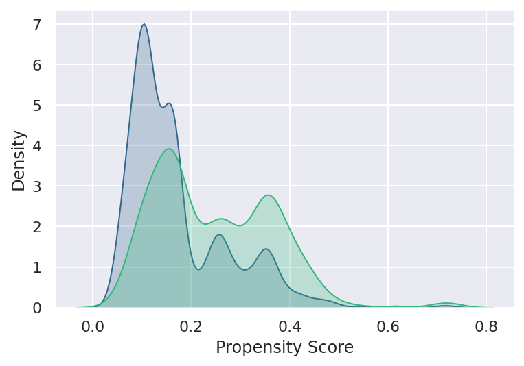
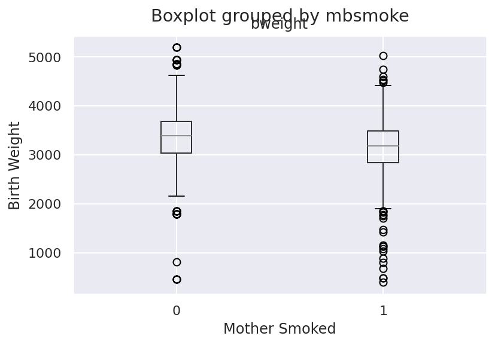

Code Call Out 3.1 - Propensity Score Matching and Job Training Programs
In observational studies, where treatment assignment is not random, estimating causal effects can be challenging due to potential confounding factors. One method to address this challenge is Propensity Score Matching (PSM) which assumes selection on observables. PSM aims to control for observed confounding by matching treated units with untreated units that have similar propensity scores. The propensity score for a unit is the probability of receiving the treatment given observed covariates. By matching on propensity scores, we aim to create a scenario where the distribution of observed covariates is similar between the treated and untreated groups, mimicking a randomized experiment. This method allows to estimate causal treatment effects in observational settings, making it a valuable tool in microeconometrics.
In this example, we will consider a setting studied by LaLonde (1986) and Dehejia and Wahba (2002), Dehejia and Wahba (1999). There, the authors sought to compare an estimate based on observational methods with an experimental programme evaluation, to see how well observational methods compare to experimental estimates. The original experimental estimates suggested that the receipt of a job training program increased earnings by $1,794 using this estimation sample. In this code call out, we work with data provided by Dehejia and Wahba (1999) which consists of an experimentally treated samples, as well as a similar sample of untreated units drawn from a large survey database (the CPS and PSID). The dataset contains information on individuals’ participation in the program (treat), their earnings in 1978 (re78) which follows program participation (in the case of treated observations), and several other covariates such as age, education, race, marital status, and earnings in 1974 and 1975 (pre-treatment outcomes). Our main objective in this exercise is to estimate the Average Treatment Effect on the Treated (ATT) of the job training program on earnings in 1978 using Propensity Score Matching.
import pandas as pdimport numpy as npimport matplotlib.pyplot as pltfrom sklearn.linear_model import LogisticRegressionfrom sklearn.neighbors import NearestNeighborsimport seaborn as snssns.set()sns.set_palette("viridis", n_colors=2)# Load the dataset###TENEMOS QUE LIMPIAR ESTO -- ES SOLO PARA DEFINIR LOS MISMOS CONTROLES QUE ELLOSdata = pd.read_stata('Datasets/Dehejia_Wahba_1999.dta')##AQUÍ CONFIRMAMOS EL VALOR EXPERIMENTAL (FILA 1 DE TABLA 2)Y1 = data.loc[data['treat'] ==1, 're78'].mean()Y0 = data.loc[data['treat'] ==0, 're78'].mean()print(Y1-Y0)data2 = pd.read_stata('Datasets/cps_controls.dta')d1treat = data[data['treat']==1]data = pd.concat([d1treat,data2])data['age2']=data['age']*data['age']data['age3']=data['age2']*data['age']data['school2']=data['education']*data['education']data['u74']=data['re74']==0data['u75']=data['re75']==0data['schoolXre74']=data['education']*data['re74']# Define the covariates and the treatment variableX = data[['age','age2','age3','education','school2','married','nodegree','black', 'hispanic', 're74','re75','u74','u75','schoolXre74']]y = data['treat']print(sum(data['treat']))### ACTUALMENTE LOGIT NO CONVERGE... SOSPECHO QUE ESTO HACE QUE LAS RESPUESTAS SEAN DISTINTAS...# Estimate propensity scores using logistic regressionlogit = LogisticRegression(max_iter=1000000)logit.fit(X, y)data['propensity_score'] = logit.predict_proba(X)[:, 1]# Perform matchingtreated = data[data.treat ==1]untreated = data[data.treat ==0]neigh = NearestNeighbors(n_neighbors=1)neigh.fit(untreated[['propensity_score']])indices = neigh.kneighbors(treated[['propensity_score']], return_distance=False)matched = untreated.iloc[indices.flatten()]#### DEBEN SER 119 DISTINTOS SEGÚN FILA 6 DE TABLA 2...print(matched['propensity_score'].nunique())# Reset indexes for treated and matched DataFramestreated = treated.reset_index(drop=True)matched = matched.reset_index(drop=True)# Diagnostic Checks# 1. Check for Missing Valuesprint(data[['age', 'education', 'black', 'hispanic', 'married', 'nodegree', 're74', 're75', 're78']].isnull().sum())# 2. Check Matching Resultsprint("Number of treated individuals:", len(treated))print("Number of matched untreated individuals:", len(matched))# 3. Check Propensity Scoresprint("Unique propensity scores:", data['propensity_score'].nunique())# Calculate ATTATT = (treated['re78'] - matched['re78']).mean()print(f"Average Treatment Effect on the Treated (ATT): {ATT}")
/usr/lib/python3/dist-packages/scipy/__init__.py:146: UserWarning:
A NumPy version >=1.17.3 and <1.25.0 is required for this version of SciPy (detected version 1.26.4
1794.3433
185.0
116
age 0
education 0
black 0
hispanic 0
married 0
nodegree 0
re74 0
re75 0
re78 0
dtype: int64
Number of treated individuals: 185
Number of matched untreated individuals: 185
Unique propensity scores: 13758
Average Treatment Effect on the Treated (ATT): 1676.01318359375
/usr/local/lib/python3.10/dist-packages/sklearn/linear_model/_logistic.py:469: ConvergenceWarning:
lbfgs failed to converge (status=1):
STOP: TOTAL NO. of f AND g EVALUATIONS EXCEEDS LIMIT.
Increase the number of iterations (max_iter) or scale the data as shown in:
https://scikit-learn.org/stable/modules/preprocessing.html
Please also refer to the documentation for alternative solver options:
https://scikit-learn.org/stable/modules/linear_model.html#logistic-regression
# Plot the histograms with outlined bars and a chosen fill colorplt.hist(treated['propensity_score'], bins=50, linewidth=1.2,label='Treated (NSW)', alpha=0.7)plt.hist(untreated['propensity_score'], bins=50, linewidth=1.2, label='Control (CPS or PSID)', alpha=0.7)plt.legend(loc='best')plt.xlabel('Propensity Score')plt.ylabel('Frequency')plt.grid(axis='y', alpha=0.75)plt.show()# Boxplot for earnings in 1978 (re78) distribution comparisonsns.boxplot(x='treat', y='re78', data=pd.concat([treated, matched]))plt.xlabel('Treatment')plt.ylabel('Earnings in 1978 (re78)')plt.title('Boxplot for Earnings in 1978 Distribution Comparison')plt.xticks([0, 1], ['Untreated', 'Treated'])plt.show()


Code Call Out 3.2 - Considering Overlap and Variable Balance
Maternal smoking during pregnancy has been a subject of extensive study due to its potential impact on infant health outcomes, such as birth weight. However, simply comparing the birth weights of infants born to smokers versus non-smokers may not account for confounding factors that influence both the likelihood of smoking and birth outcomes. In this code call out, we will work with data from Almond, Chay, and Lee (2005) which consists of a child’s birthweight, an indicator of whether their mother smoked during pregnancy, and a number of covariates.
import pandas as pdimport statsmodels.formula.api as smffrom sklearn.linear_model import LogisticRegressionfrom sklearn.neighbors import NearestNeighborsimport matplotlib.pyplot as pltimport seaborn as sns
/tmp/ipykernel_19276/753625340.py:21: FutureWarning:
`shade` is now deprecated in favor of `fill`; setting `fill=True`.
This will become an error in seaborn v0.14.0; please update your code.
/tmp/ipykernel_19276/753625340.py:22: FutureWarning:
`shade` is now deprecated in favor of `fill`; setting `fill=True`.
This will become an error in seaborn v0.14.0; please update your code.


Code Call Out 3.3 - Inverse Propensity Score Weighting
# Import Libraries and Load Dataimport pandas as pdimport numpy as npfrom sklearn.linear_model import LinearRegression, LogisticRegressionimport statsmodels.api as smimport statsmodels.formula.api as smffrom dowhy import CausalModel as DoWhyCausalModelfrom sklearn.neighbors import NearestNeighbors# Load the datadata = pd.read_stata('Datasets/Dehejia_Wahba_1999.dta')# Define covariates and treatment variablecovariates = ['age', 'education', 'black', 'hispanic', 'married', 'nodegree', 're74', 're75']treatment ='treat'outcome ='re78'# DoWhy CausalModel for Propensity Score Methodsdowhy_model = DoWhyCausalModel( data=data, treatment=treatment, outcome=outcome, common_causes=covariates)identified_estimand = dowhy_model.identify_effect(proceed_when_unidentifiable=True)ps_methods = ["matching", "weighting"]ate_dowhy = {}att_dowhy = {}for method in ps_methods: estimate_ate = dowhy_model.estimate_effect( identified_estimand, method_name=f"backdoor.propensity_score_{method}", target_units="ate" ) estimate_att = dowhy_model.estimate_effect( identified_estimand, method_name=f"backdoor.propensity_score_{method}", target_units="att" ) ate_dowhy[method] = estimate_ate.value att_dowhy[method] = estimate_att.value# Estimating Propensity Scoreslogit_model = LogisticRegression()X = data[covariates]y = data[treatment]logit_model.fit(X, y)data['pscore'] = logit_model.predict_proba(X)[:, 1]# Propensity Score Matching for ATTtreated = data[data[treatment] ==1]control = data[data[treatment] ==0]nn = NearestNeighbors(n_neighbors=1, algorithm='ball_tree').fit(control[covariates])distances, indices = nn.kneighbors(treated[covariates])matched_control = control.iloc[indices.flatten()]matched_data = pd.concat([treated, matched_control])# Regression for ATT on Matched DataX_matched = sm.add_constant(matched_data[covariates + [treatment]])y_matched = matched_data[outcome]model_matched = sm.OLS(y_matched, X_matched).fit()att_matched = model_matched.params[treatment]# Linear Regression for ATElm_ate = LinearRegression().fit(data[[treatment]], data[outcome])ate_regression = lm_ate.coef_[0]# Display Resultsprint(f"ATE by Regression: {ate_regression}")print(f"ATT by Matching and Regression: {att_matched}")for method, estimate in ate_dowhy.items():print(f"ATE by {method.capitalize()}: {estimate}")for method, estimate in att_dowhy.items():print(f"ATT by {method.capitalize()}: {estimate}")
/usr/local/lib/python3.10/dist-packages/sklearn/linear_model/_logistic.py:469: ConvergenceWarning:
lbfgs failed to converge (status=1):
STOP: TOTAL NO. of ITERATIONS REACHED LIMIT.
Increase the number of iterations (max_iter) or scale the data as shown in:
https://scikit-learn.org/stable/modules/preprocessing.html
Please also refer to the documentation for alternative solver options:
https://scikit-learn.org/stable/modules/linear_model.html#logistic-regression
ATE by Regression: 1794.34228515625
ATT by Matching and Regression: 1851.9074325839579
ATE by Matching: 936.4294445680769
ATE by Weighting: 1630.527060475144
ATT by Matching: 1177.435842895508
ATT by Weighting: 1859.8779483330063
/usr/local/lib/python3.10/dist-packages/sklearn/linear_model/_logistic.py:469: ConvergenceWarning:
lbfgs failed to converge (status=1):
STOP: TOTAL NO. of ITERATIONS REACHED LIMIT.
Increase the number of iterations (max_iter) or scale the data as shown in:
https://scikit-learn.org/stable/modules/preprocessing.html
Please also refer to the documentation for alternative solver options:
https://scikit-learn.org/stable/modules/linear_model.html#logistic-regression
Dehejia, Rajeev H., and Sadek Wahba. 1999. “Causal Effects in Nonexperimental Studies: Reevaluating the Evaluation of Training Programs.”Journal of the American Statistical Association 94 (448): 1053–62. http://www.jstor.org/stable/2669919.
———. 2002. “Propensity Score-Matching Methods For Nonexperimental Causal Studies.”The Review of Economics and Statistics 84 (1): 151–61.
LaLonde, Robert J. 1986. “Evaluating the Econometric Evaluations of Training Programs with Experimental Data.”The American Economic Review 76 (4): 604–20.